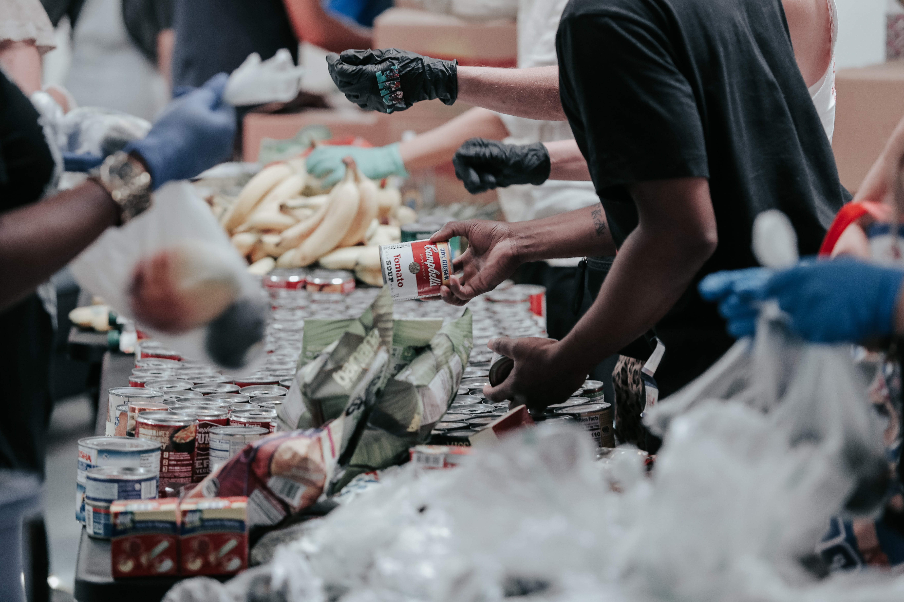
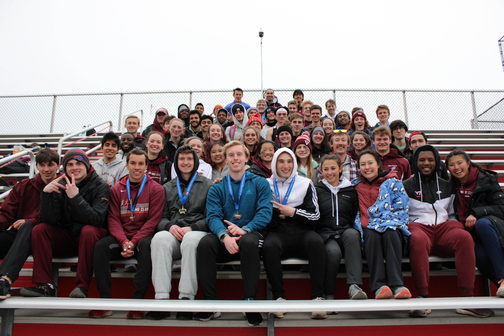

Why It's Not Embarassing to Watch Barbie Movies as an Adult
This blog post is all about why I enjoy watching Barbie Movies and why it's totally not embarassing, even as an adult.

Buneary Group Podcast
Want to listen to what a typical day at the dining hall is like? Want to know what your school is doing to help those with food insecurity? Give this Podcast a listen!

Join Running Club!
Do you enjoy running and competing in track meets? Watch this video to get a good idea of what being on the club track team is like!.

Running Club Season Highlights
Were you interested in joining running club after watching my promotional video? Go ahead and watch this video of the highlights from our last season to get a good look into what it's like to be on the team!